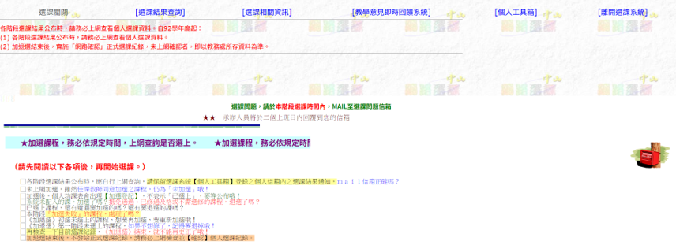
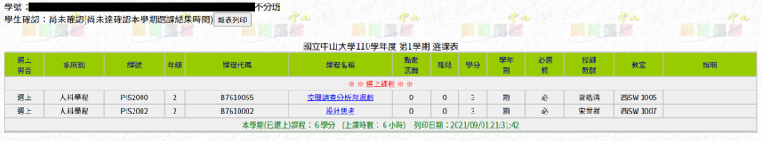
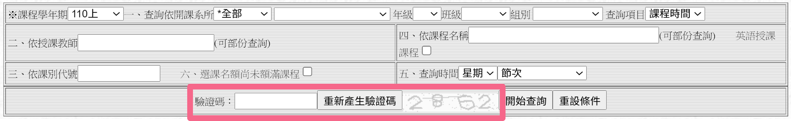
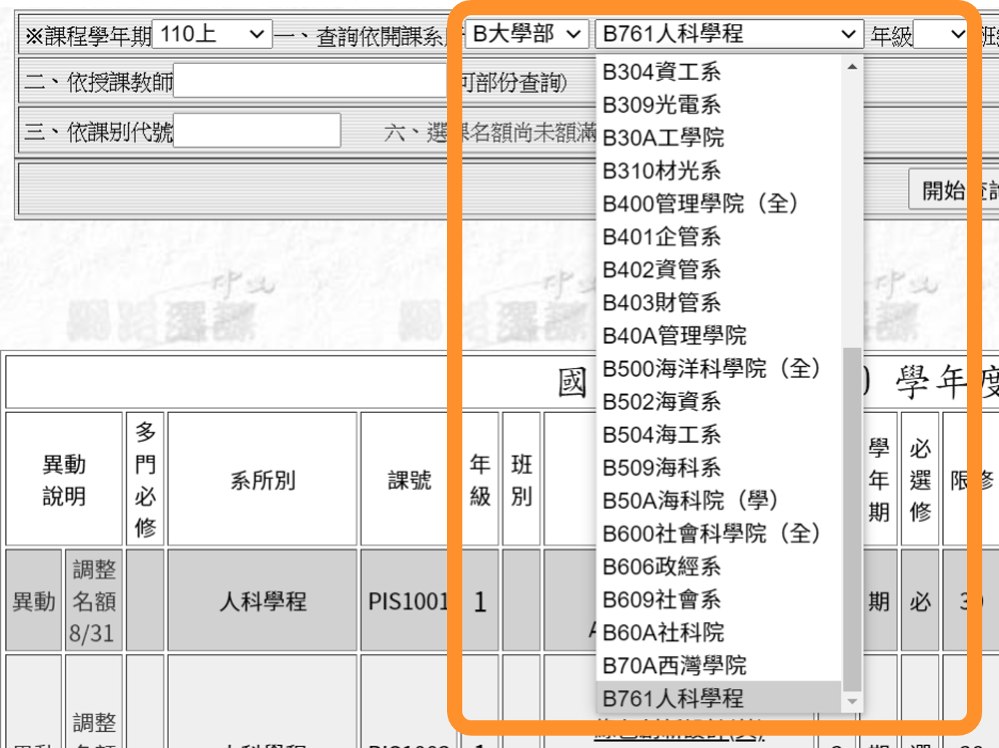
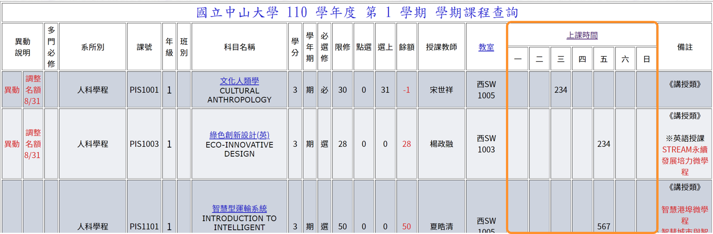
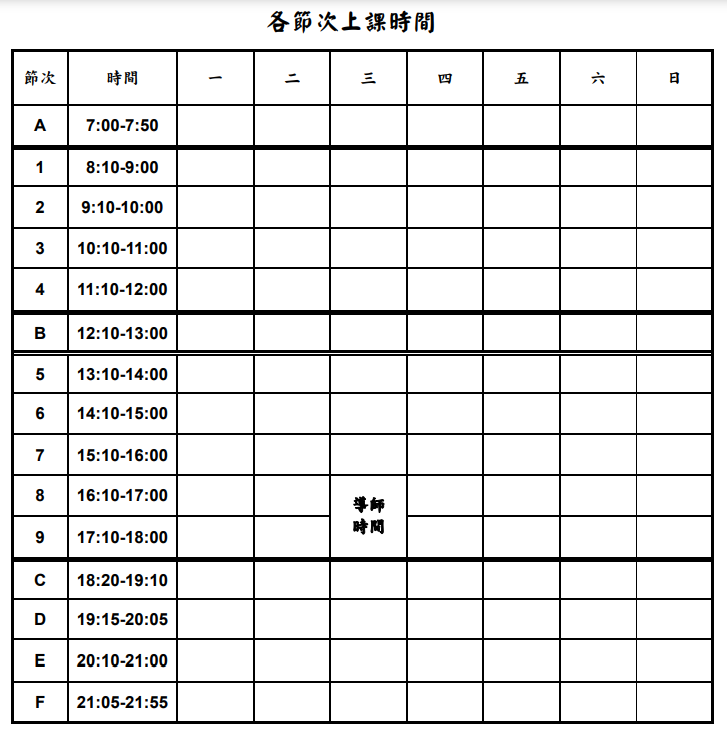
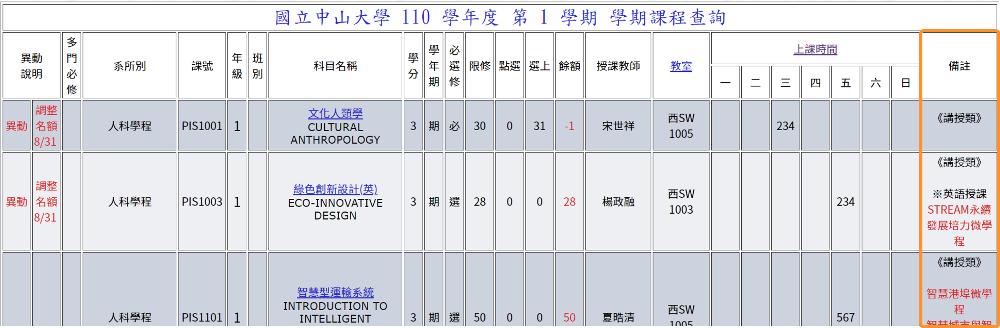
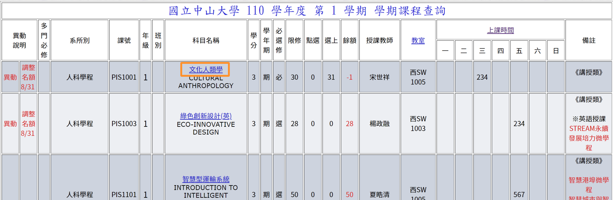

← BACK

本章節會告訴你怎麼查這學期有哪些必修課
請先登入選課系統
登入後可以看到下圖：

選擇 [選課結果查詢] → [目前選課資料]
目前還沒進入正式選課階段，可以看到系統已經先幫我們預選系上的必修課程。

提示：正常來說，我們不會退掉當學期的必修課，所以我們在排課時會先把必修課加進自己規劃的課表中，未來排課時就避開這些時間。
接下來我們可以開始排課，但我們從上圖中可以發現系統沒有顯示上面必修課的時間，所以我們要先去查這些課的時間。
請先開啟查詢課程網頁
提示：剛剛已經有登入選課系統，可以發現查詢課程時不必輸入驗證碼。

因為我們要查詢系所課程，所以先選擇 [大學部] → [選擇要查的系所]，可以看情況選擇年級、班級進行篩選。

我們可以在右邊看到該堂課的上課時間。

提示：一個字母或數字代表一節課；大部分來說，如果是3學分的課，就會每周上三小時，但是實驗課或部分課程可能例外；周三的第8、9節是導師時間，不會有課程在導師時間授課。

例如：有一堂必修-基礎程式應用是在星期一的2、3、4，代表它上課時間為星期一的9:10-12:00，未來排課時就要避開這段時間。
提示：其實課程查詢網頁也可以查到該學期該系該年級的必修課，但每個人可能會因為休學、復學等情況而被排入不同的必修課，所以同學可以視情況來查詢自己當學期的必修課有哪些；如果對於系統自動排入的必修課有任何問題，可以諮詢教務處課務組。
注意：有些課程實際的上課時間可能與表上不同，請仔細查看課程說明。
注意：有些課會限制選修、綁學程、高教深耕計畫(中)、他國語言授課等，請仔細查看課程說明，如有問題請聯絡開課系所承辦人員。

點進去可以查看該課程的詳細資訊，但此資訊僅供參考，實際以第一堂教授公布為主，所以第一堂課通常一定要去上。

查到課的時間後，放進自己規劃的課表裡面。
注意：大部分的人在規劃課表時，都會透過社群論壇來搜尋課程內容評價，但每年的課程內容、教師都可能會有異動，且匿名論壇之言論僅供參考，請自行判斷真實性。
接下來，你可以開始著手準備初選一。